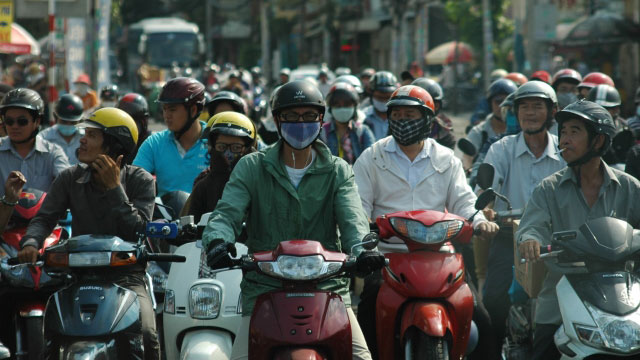

偉そうなタイトルをつけた割には、私も実は大して知りません…。
もちろん世界史の講師をしていた経験から、王朝の変遷や主な出来事の年号などは知っていますし、地理もなんとなく分かります。ただ、これらはすべて本から学んだこと。本に載っていない、微妙な「感覚」は全くもって分からない状況でした。
そんなわけで、この出張に行く前、私はずいぶん身構えていたわけです。例えば太平洋戦争前の「日本の仏印進駐」のような事件がちらつきます。ひょっとして、ベトナムの人は日本人をよく思っていないのではないかな、と。また、ベトナム戦争の知識もちらつきます。まだ西側諸国に隔意を持っているのではないかな、と。もちろん、日々入ってくる日越関係の深まりを告げるニュース（天皇陛下の訪越もありましたね）から、たぶん強い反日感情はないだろうと思ってはいたものの、どこかしら不安はありました。
また、現在のベトナムの国家体制（共産主義）も不安の一つでした。ベトナムはかなり早くからドイモイといわれる経済自由化路線を推し進めていて、共産主義国といってもそれほど厳しいものではないと言われています。しかし、表面的な柔らかさの下に隠れた本当の姿はどうなのだろうと頭の片隅で思ってはいました。
さらに、経済発展の度合いについても勝手なイメージがありました。ベトナムは現在アジア圏で最も経済的にホットな国の一つです。中国の人件費高騰を受けて、これまで中国で工場を作っていた世界中の企業が徐々に他国にシフトしていると言われています。そのシフト先の一つがベトナム。しかし、そうはいってもまだ発展の最初の段階ですから、まだ全体的にはかなり貧しいのだろうというのが私の思い込みでした。
初日、ホーチミン市のタンソンニャット空港に降り立ち、空港からホーチミン市内にあるホテルまで車で移動する間に上に書いた様々な「イメージ」についていろいろなことが分かりました。
まず、道いっぱいを文字通り埋め尽くすバイクの群れ。車線いっぱいに5台6台と併走し、さながら川のように流れています。そして、このバイクの川に浮かぶ「船」よろしく車が走っている。そんな状況です。ベトナムがバイク天国というのは世界的に結構有名らしく、わたしも以前どこかのサイトで写真を見たことがありました。おかげでその光景自体には大きな驚きはありません。
むしろ、わたしが驚いたのは車の方です。走っている車が見事に高級車ばかりなのです。それも、一世代、二世代前の中古車ではなく、明らかに現行の新車。メルセデス・BMW・アウディのドイツ御三家は当然として、レクサス、ポルシェやランドローバー、ベントレー、ロールスロイス、マセラッティ、果てはマイバッハと、日本でも銀座界隈に行かないとお目にかかれない2000万円超の高級車がゴロゴロ走っています。タクシー以外は高級車しか走っていないのではないかというくらい多いのです。
ベトナムに行く前も貧富の格差は予想していたものの、富裕層の規模については明らかに予想以上でした。一方で、普及車の数のすくなさを見る限り、中間層はまだギリギリ自家用車を持つレベルに達していないのかもしれません。
ちなみに、バイクに乗っている人々はどうかといえば、これもイメージとはかなり違った姿です。渋滞待ちの彼らを観察してみると、皆携帯をいじっています。そこまでは日本でも見慣れた光景ですが、彼らの携帯がiPhoneであることに気づいてぎょっとしました。分割の関係で一見安く感じられるiPhoneですが、実は10万円近くします。10万円と言えば日本でもかなり高い金額ですから、日本との収入格差が大きいベトナム（一般労働者の月収が月3～5万円ほどとのこと）から見ると、超高額デバイスなわけです。にも関わらずあの普及度…。
バイクに乗っている人々＝貧困層では全くないと気づいてみると、彼らの身なりはみな一様におしゃれ。若者はファッションに気を遣い、女性は日焼けに気を遣い、とごく普通の人々でした。
ホーチミン市街を車で巡りながら、次に気づいたのが外国語の少なさです。例えば日本だと、店の看板の多くに英語が書かれていますよね。企業のキャッチフレーズが英語だったりするのはざらです。ですが、ベトナムの看板にはそれがほぼゼロ。ベトナム語は、文字自体はアルファベットを使っているため英語っぽく見えますが、よく見てみると見慣れないアクセント記号がついていてベトナム語と分かります。
この現象がとても気になったので、今回旅を案内していただいた現地の方に尋ねてみたところ、政府（共産党）の方針なのだそう。
フランスの植民地であった期間が長いベトナムでは、生活のすべてに渡ってフランスの影響が残っています。特に街の地名や道路名はフランス統治時代につけられたものが多く、このフランスの残滓が政府にとっては気にくわないのだそうです。結果、公共物の名前はどんどんベトナム語に置き換えられているのです。
さらに話を聞いてみると、ここだけの話、といった感じで教えてくれたのは、日本にもアメリカにももちろん思うところはあるけど、一番微妙な感情があるのはフランス、とのこと。話してくれたベトナムの方が南出身だからかもしれませんが、フランスへの感情が未だ複雑なものというのは少し驚きでした。
さて、今回はなんともとりとめのない話になってしまいましたが、次回はいよいよベトナムの教育についてのお話です。